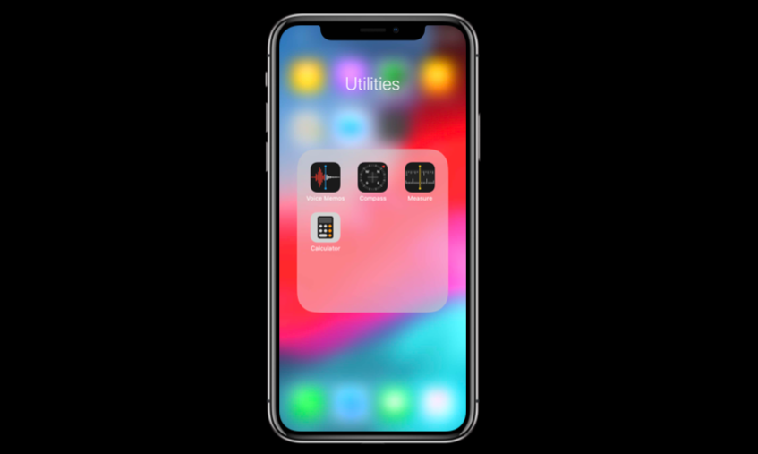
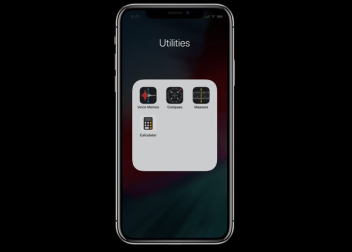
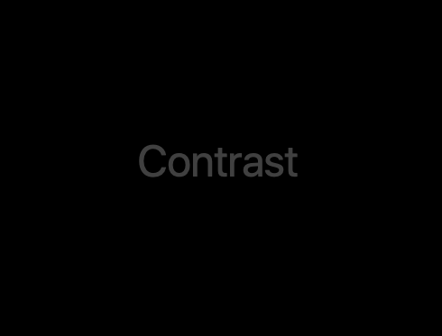
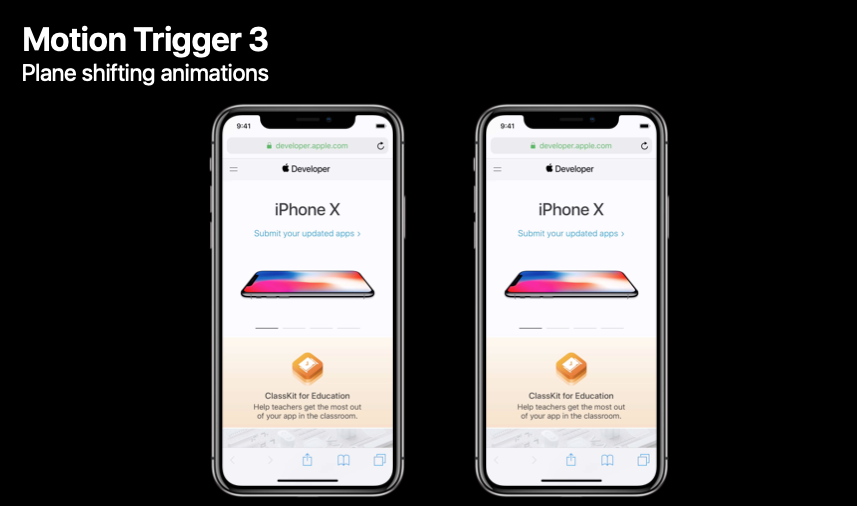

2020 年 5 月 21 日是第 9 个全球无障碍宣传日。无障碍使用也是 Apple 产品设计时的目标之一，我们倾向于认为无障碍功能的意义就是让每个人都能使用科技，正如 Apple 所说「让每一个人受益的科技，才是真正强大的科技。」
在 Apple，无障碍技术分成值得关注的四个部分：认知、动作、视觉、听觉。Apple 提供了一系列的功能去解决所有这些部分的问题，但总而言之，是你所做的工作和 Apple 提供的辅助功能技术让我们为残障人士建立的平台变得出色。
让你为之工作的所有好内容对于每个人都是可用的，这为我们创造了一个更好、更包容的社区，改善了全世界成千上万用户们的生活。
这篇文章会跳过无障碍功能的一些基本介绍，可以查看其它有关辅助功能的文章：
首先来看一个词「可用」，「可用」很好，确保让你的 app 的所有内容对于辅助功能技术都是可见的，这是关键的第一步。但是我们不只是想让我们的 app 可用，没有人会到处吹嘘自己的 app 是可用的，我们想让我们的 app 是出色的，我们想让使用 app 的人感到愉悦。那么当谈到「出色」时，这对于无障碍功能又具体意味着什么呢？这就是这篇文章想要讲的，希望能提供给你一些有帮助的指导建议。
文章聚焦于两个部分，一部分是视觉设计，另一部分是辅助功能技术使用体验，针对于这两个部分讲一讲你需要具体考虑些什么。
视觉设计
透明和模糊
我们在 iOS 系统的许多地方使用透明和模糊效果，它可以为我们的操作系统创造一种鲜活的、独特的感觉。
但是对于一些人来说，特别是那些视力不好的人，模糊和透明效果可能会在可读性上造成不好的结果，甚至是造成一定的眼部压力。


所以我们提供了一个辅助功能设置用来减少透明和模糊效果。像下图这样，不是去模糊背景，而是使其变暗，这样你仍然知道你处在系统的什么场景中，但是视觉噪声却减少了。而对于控件，以前是会有背景颜色透进来，而现在是固定的背景色，可读性更高了。
对于主屏幕 app 文件夹和聚焦页面也是一样的处理方式。这是一个好的示例，因为我们从用户的壁纸中取得一个样本然后给背景上色，用户仍然能感受到设备的个性化和情景化，但同时通过固定背景增强了对比度和可读性。

作为一名开发者，你可以通过检查减少透明度设置是否开启来控制透明和模糊效果的使用、调整你的 UI。在 iOS 和 macOS 上你可以通过下面的代码来作判断：
// Transparency and Blurring
// iOS
extension UIAccessibility {
public static var isReduceTransparencyEnabled: Bool { get }
}
// macOS
extension NSWorkspace {
open var accessibilityDisplayShouldReduceTransparency: Bool { get }
}
对比度
当谈到感知能力时，内容和内容背景的对比度十分重要。一个颜色越接近另一个颜色，它们就越难辨认。

某种颜色在较大尺寸时是可读的，但当内容变小时就不行了。例如对于文本来说，字号越小字母看起来越容易混在一起。
我们推荐你遵从网页内容无障碍规范中所说的最小对比度 4.5:1 的要求。
当然，你能够获得的最高对比度就是黑色和白色之间，大约是 21:1，这对于所有的文本尺寸都是合适的。

再来看一些灰色与黑色的对比度情况。下图中的灰色在文本较大时是合适的，但在文本比较小时就不合适了，因为你的眼睛无法辨别出字母的形状，4.5:1 的对比度对于看得清来说算是刚刚及格。
下图中的灰色与背景黑色的对比度只有 2.9:1，在一个小屏设备上，即使字体尺寸很大，你也会遇到看不清的情况，这个对比度太低了。
你可以使用 Xcode 中在辅助功能查看器（accessibility inspector）里内置的工具去查看颜色组合之间的对比度以及特定的文本尺寸下这个对比度是否合适。使用的规范就是上面提到的。
然而，即使对比度大于 4.5:1，对于那些视力条件不好的人来说，当颜色出现在各种 bar 上时，可读性对他们来说仍然存在问题。所以我们提供了一个全局的「增强对比度」设置选项。在以前版本的 iOS 中，这个设置项被称为「加深颜色」。在 iOS 和 macOS 上你可以通过下面的代码来作判断：
// Increase Contrast (Darken Colors)
// iOS
extension UIAccessibility {
public static var isDarkerSystemColorsEnabled: Bool { get }
}
// macOS
extension NSWorkspace {
open var accessibilityDisplayShouldIncreaseContrast: Bool { get }
}
如果你使用了标准的 UIKit 控件并开启了 tint color，这些配置就可以自动完成。
尺寸
改变设备上的内容尺寸会对内容展示和被感知的方式产生巨大的影响。对于低视力用户来说，这是很有帮助的。
下面以「日历」app 说明。下图中左边的是默认字体尺寸，右边的是某一种更大的辅助功能尺寸。
如果我们模拟下一个低视力的人实际看到的情况，增大尺寸所能获得的好处就可以立马显现出来，右边的文本仍然是可读的。
在 iOS 中，你可以检查确认用户设定的设备字体尺寸是什么，这里有七种标准的字体尺寸，默认为「大 large」。你还可以开启「更大的辅助功能字体」，再获得五种更大的字体尺寸。
字体大小问题解决了，但是有可能默认的字体字重和图形粗度也会造成阅读困难。所以在 iOS 中，你可以开启「粗体文本」设置选项。
如果你使用了标准的 UIKit 控件和系统字体，你不需要做什么就可以获得这项特性的支持，但如果你使用了你自己的文本解决方案或者自定义字体，亦或是你只是想在系统的粗体文本设置选项开启时让 app 中的分隔线更粗一点，你可以检查确认这个设置项是否被开启，从而进行必要的调整。
// Bold Text
extension UIAccessibility {
public static var isBoldTextEnabled: Bool { get }
}
动效
动画是有趣的，它总是可以让内容变得生动活泼，它可以在用户的交互和他们动作带来的效果之间提供一个直接的关联。然而，某些条件下，特别是那些会影响大脑中枢平衡的耳内条件可能会使运动和动画产生问题，会造成诸如眩晕或者不平衡甚至恶心这样的问题。
注：由于动效的示例需要动态动画展示，目前暂以静态画面代替，可根据文字描述在手机上操作查看示例展示的情况。
下面是几个动画的示例。第一个是缩放和放大动画。在下图中的左边，默认情况下，在打开一个时钟 app 时，我们会放大 app icon，时钟 app 的 UI 同时放大；在右边，当开启「减弱动态效果」时，打开 app 的动效就会变成简单的交叉淡入淡出效果。
第二个是快速转动和旋转效果。来看一下信息 app 发送信息时的全屏回声效果，可以看到内容是沿着 Z 轴转动同时改变大小，这些类型的动效组合在一起可能就会造成问题。如果开启了「减弱动态效果」，就会给用户提供一个提示以让用户主动选择去播放这些信息效果，而不是自动播放。
第三个是平面转换动画。当在 Safari 中点击显示所有标签页按钮时，你可以看到网页卡片的平面转换成了一个模拟的 3D 空间。而当减弱动态效果开启时，这个动画就会变成一个简单的淡入淡出动画，并且会闪烁一下你的当前页面的那个卡片，以让你知道你是从哪里来的。

第四个是不同方向和不同速度的动画。在信息中，当滚动信息列表时，每一个信息气泡之间会有弹性，如果开启了「减弱动态效果」，上面说的这个效果就没有了，会变成普通的滚动。
最后一个是外围移动效果。iOS 中的天气 app 在背景中会有微弱的动效以表明当前的天气条件。在下图的左边，你可以看到云彩在慢慢的移动，日光闪闪。但是如果你滚动到下面的天气详细信息，这些动画就会变成外围动画，这在某些情况下是有问题的，例如开车时查看天气预报，你会感到恶心。你的聚焦区域的上方如果出现水平运动会触发大脑的一些反应。当开启「减弱动态效果」时，我们会把背景动画效果关闭。
通常情况下，我们不想要你只是简单地移除所有的动画，简单地移除一个动画并不总是一个很好的体验，你不想让用户体验打折扣，你可以只是采用一些虽然不同但同样有趣或者吸引人的适合用户的方案。我们也有一个设置让你去检查确认动画是否应该被减少并根据需要做出调整。在 iOS 和 macOS 上你可以通过下面的代码来作判断：
// Motion
// iOS
extension UIAccessibility {
public static var isReduceMotionEnabled: Bool { get }
}
// macOS
extension NSWorkspace {
open var accessibilityDisplayShouldReduceMotion: Bool { get }
}
复杂度
App 在我们的生活中扮演着重要角色，科技是简单的和容易使用的，科技应该增强了我们的生活而不是增加额外的不必要的负担，这对我们十分重要。只在美国，每六个孩子就有一个发育障碍，从言语障碍到更严重的像是自闭症这样的发育障碍。
对于有认知障碍甚至是有慢性疾病的人来说，使用一个 app 需要比正常人花费更多的精力，所以我们如何确保我们的 app 是简单的、最小负担的呢？
- App 应该是容易导航的，它们具有相似的结构和清晰的、有逻辑的因果关系。
- 我们应该能够在没有遇到任何障碍的前提下，快速开始使用我们的 app，完成最普遍的任务。
- 我们的 app 应该有一致的行为，这样当我在一个地方学习到了什么时，就可以运用到其他地方。
使用标准的 UIKit 界面就很好，因为人们熟悉这些系统界面和控件的工作方式，UIKit 也是 iOS 的设计语言。所以如果你设计了一些自定义的东西，与 UIKit 中的类似控件的行为保持一致将会帮助人们从直觉上知道如何使用你的 app。
这些都可以归结为人们体验你的 app 的方式，它们对于使用辅助技术（如旁白或者切换控制）的人们同样重要。
辅助功能技术使用体验
使用辅助技术的体验会和普通用户的使用体验有很大不同。旁白使用非常多的手势（如滑动、多指点击），切换控制扫描不同的项目，提供合理的、快速的操作。
对于这两者都有与任何标准手势或者交互相等价的内建操作，但是怎样让使用这些技术的 app 的用户体验变得出色？我们想让基础的工作变得出色，尽管这些辅助技术的用户体验你的 app 的方式是完全不同的，但是给非辅助功能用户创造好的体验的相同的设计原则也可以应用在这里。你需要简单的导航、可预测的行为、行动优先、一致性，还要特别注意那些分开的元素是通过情景化来传达的，那么相同的情景也应该传达给辅助功能用户。
实例
下面将通过一个实例来说明如何审查一个 app 的辅助功能使用体验。
这个 app 的名字是「Exceptional Dogs」，其目标是通过让用户浏览一系列需要找寻新家庭的小狗的信息来让这些小狗的收养过程更简单。下图就是这个 app 的界面：
- 在顶部，有一个小狗的轮播 UI，展示了我可以浏览的不同小狗的图片。在左下角有一个「收藏」按钮，我可以点击它收藏特定的某只小狗；在右下角有一个图册按钮，点击后可以以一个模态视图查看更多的小狗图片。并不是所有的小狗都有一个图册按钮，当从一个有图册的小狗滑向一个没有图册的小狗时，图册按钮会淡出。
- 在图片的下面，是每只小狗的具体信息，包括名字、品种、年龄、体重、性别、性格等等，最后还包括小狗现在所在的救助站的位置信息，提供了两个按钮：一个是在地图上显示具体的位置，另一个是拨打电话。
现在在这个 app 中开启旁白功能，来看看一个盲人用户或者视障用户是如何消化这个 app 的复杂度的。会发现下面的这些问题：
- 旁白可以正确地在轮播 UI 中滚动，但是直到最后一个轮播图片之后才能读出收藏按钮和图册按钮，以及下面的小狗的具体信息。
- 在图册的模态窗口中，当滑动到最后一张图片后再继续滑动，旁白会继续播放模态窗口下面或者说背后的内容，这会让用户困惑或者分心。
- 在每只小狗的具体信息部分，所有的文字是从左到右、从上到下朗读的，但我们在听到「名字」这个词语之后，下一步想听到的应该位于「名字」词语下面的小狗的名字，而现在听到的是「品种」这个词语。视觉上结构没有问题，但对于旁白来说，它的结构顺序就是错乱的，这会减少旁白用户的情景化创建，造成不必要的认知负担。
- 对于救助站信息上的两个按钮，对于旁白来说目前也是缺乏情景化的。当我听到「打电话按钮」时，我不清楚这个操作是和什么相关，即使视觉上很清楚。
以上发现的这些问题不会让我们的 app 不可用，但它们给用户造成了不必要的认知负担，而我们的目标是创造一个杰出的无障碍用户体验。
审查之后，来看解决方案：
- 我们需要每一只小狗的操作和数据可以快速可访问，可以定义收藏按钮和图册按钮是每一只小狗的次级操作（sub elements），这样你就可以通过左右滑动访问小狗的收藏按钮、图册按钮、具体信息；
// Custom Accessibility Elements
public class UIAccessibilityElement : NSObject {
public init(accessibilityContainer container: Any)
}
extension NSObject {
open var accessibilityElements: [Any]?
}
- 通过
accessibilityIncrement和accessibilityDecrement来在不同的小狗之间进行导航，这样你就可以通过上下滑动来切换不同的小狗；
// Increment and Decrement
extension NSObject {
// Must have UIAccessibilityTraits.adjustable
open func accessibilityIncrement()
open func accessibilityDecrement()
}
- 对于小狗信息中的文本标签和其对应值进行分组，减少了信息组的数量，提高了导航速度，还让用户更清楚旁白讲的是什么，这样旁白就可以一次性读出小狗信息中的文本标签和其对应值；

- 对于小狗信息中救助站部分，在之前是被分为了三个部分，同样缺乏场景化，我们也是将他们组合在一起。同时我们考虑这个部分的关键信息，就是小狗所在的救助站的信息，所以我们可以把另外两个按钮作为救助站信息的额外两个动作，这样在旁白读到救助站信息时就会同时告诉用户这里有额外的操作可用，可通过上下滑动听取具体的操作；
// Custom Actions
extension NSObject {
open var accessibilityCustomActions: [UIAccessibilityCustomAction]?
}
class UIAccessibilityCustomAction : NSObject {
open var name: String
open var target: AnyObject?
open var selector: Selector
public init(name: String, target: Any?, selector: Selector)
}
- 最后一部分是图册部分，让旁白排除掉模态界面之外的元素，同时屏幕上的元素发生改变时需要让辅助功能技术知道，以让其尝试重新聚焦。
// Modality
extension UIView {
open var accessibilityViewIsModal: Bool
}
// Screen Change
extension UIAccessibility {
public static func post(notification: UIAccessibility.Notification, argument: Any?)
}
extension UIAccessibility.Notification {
public static var screenChanged: UIAccessibility.Notification
}
总结
值得注意的是，为你的 app 的辅助功能创造自定义的界面有时候并不是一个好的解决方案，有时简单的调整就是最好的调整，但是当你在让你的 app 变得无障碍时你真正应该做的是不仅仅是在表面思考，更应该深入思考对于那些通过辅助科技使用 app 的用户来说意味着什么。
可用是让 app 无障碍使用的第一步，但我们还可以做得更好，我们可以我们也应该为用户提供出色的、愉快的使用体验以满足他们的独特需求。
- 从一开始就考虑 app 的无障碍使用特性的设计将会赢在起跑线上；
- 让你的 app 的设计可以根据用户的系统设置做出修改；
- 带着目标去创造无障碍使用体验，内容保持优先，导航简单直观。
参考链接
如果你觉得这篇文章对你有所帮助，欢迎请我喝杯咖啡，感谢你的支持😁